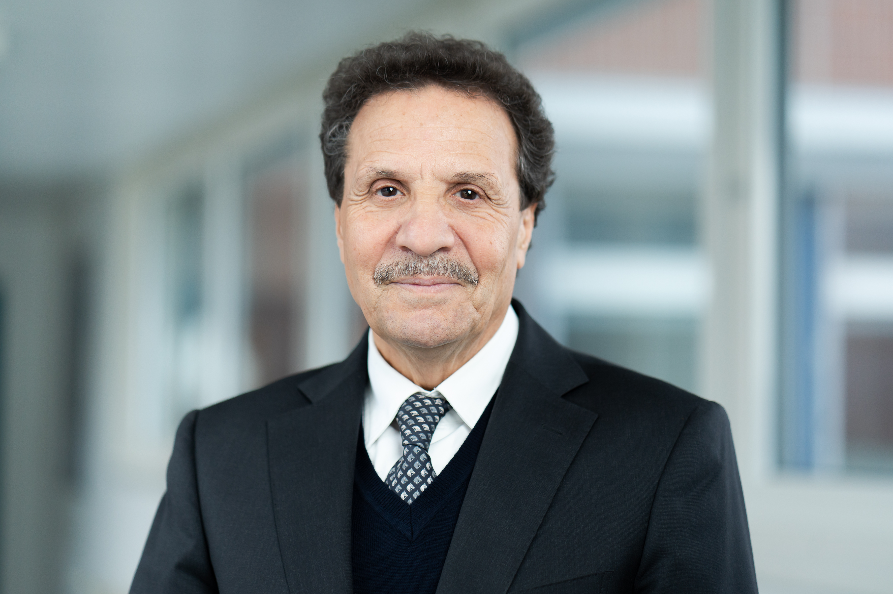

Wissenschaftliche Expertise an der Schnittstelle zwischen Materialwissenschaften, Biomaterialien und Nanotechnologie — für fundierte Gutachten, technische Due Diligence und IP-Bewertung. Scientific expertise at the intersection of materials science, biomaterials, and nanotechnology — for substantiated expert opinions, technical due diligence, and IP assessment. Expertise scientifique à l'intersection des sciences des matériaux, des biomatériaux et des nanotechnologies — pour des expertises fondées, la due diligence technique et l'évaluation de brevets.

Die folgenden Wissensgebiete bilden die fachliche Grundlage für unabhängige Gutachten, IP-Bewertungen und technische Due Diligence — sie spiegeln jahrzehntelange Forschungs- und Publikationstätigkeit wider, nicht aktuelle Entwicklungsangebote.
The following knowledge areas form the scientific foundation for independent expert opinions, IP assessments, and technical due diligence — they reflect decades of research and publication activity, not current development services.
Les domaines de connaissance suivants constituent la base scientifique pour les expertises indépendantes, les évaluations de PI et la due diligence technique — ils reflètent des décennies d'activité de recherche et de publication, et non des services de développement actuels.
Tiefgreifende Kenntnisse in Implantatwerkstoffen (NiTi, Ti-Legierungen, Polymere), Biokompatibilitätsbeurteilung, antibakteriellen Oberflächen und biomaterial-biologischen Wechselwirkungen — Grundlage für Gutachten zu Medizinprodukten und Implantatversagen.
In-depth knowledge of implant materials (NiTi, Ti alloys, polymers), biocompatibility assessment, antibacterial surfaces, and biomaterial-biological interactions — the basis for expert opinions on medical devices and implant failure.
Connaissance approfondie des matériaux d'implants (NiTi, alliages Ti, polymères), évaluation de la biocompatibilité, surfaces antibactériennes et interactions biomatériau-biologique — base pour les expertises sur les dispositifs médicaux et les défaillances d'implants.
Umfassende Kenntnis von Nanopartikeln, Nanokompositen und nanostrukturierten Schichten für diagnostische Anwendungen und Biosensoren — Basis für die wissenschaftliche Bewertung von Patenten und Technologien im Bereich Nanodiagnostik.
Comprehensive knowledge of nanoparticles, nanocomposites, and nanostructured films for diagnostic applications and biosensors — basis for the scientific assessment of patents and technologies in nanodiagnostics.
Connaissance approfondie des nanoparticules, nanocomposites et films nanostructurés pour les applications diagnostiques et les biocapteurs — base pour l'évaluation scientifique des brevets et technologies en nanodiagnostic.
Fundiertes Wissen über Wirkstoffträgersysteme, Hydrogele und Freisetzungsmechanismen — ermöglicht die sachkundige Beurteilung von Patenten, klinischen Ansprüchen und technologischen Innovationen im Bereich Drug Delivery.
Sound knowledge of drug carrier systems, hydrogels, and release mechanisms — enabling informed assessment of patents, clinical claims, and technological innovations in the drug delivery field.
Connaissance solide des systèmes vecteurs de médicaments, hydrogels et mécanismes de libération — permettant l'évaluation éclairée des brevets, revendications cliniques et innovations technologiques dans le domaine du drug delivery.
Tiefe Expertise in Antifouling-Polymersystemen, zwitterionischen Beschichtungen und Nanokompositen — fundierte Basis für die Bewertung entsprechender Patente, Technologietransfers und Schadensfälle in der Medizin- und Optikbranche.
Deep expertise in antifouling polymer systems, zwitterionic coatings, and nanocomposites — a solid basis for assessing related patents, technology transfers, and damage cases in the medical and optical sectors.
Expertise approfondie en systèmes polymères anti-adhésifs, revêtements zwitterioniques et nanocomposites — base solide pour l'évaluation des brevets, transferts de technologie et sinistres dans les secteurs médical et optique.
Wissenschaftliches Verständnis bioinspirierter Prinzipien in der Materialforschung — Grundlage für die kritische Beurteilung von Patentansprüchen, Innovationshöhe und technologischer Neuartigkeit in diesem wachsenden Feld.
Scientific understanding of bioinspired principles in materials research — basis for the critical assessment of patent claims, inventive step, and technological novelty in this growing field.
Compréhension scientifique des principes bioinspiré en recherche matériaux — base pour l'évaluation critique des revendications de brevets, de l'activité inventive et de la nouveauté technologique dans ce domaine en croissance.
Breites analytisches Instrumentarium: AFM, REM/TEM, XPS, Nanomechanik, Tribologie — ermöglicht unabhängige, messtechnisch fundierte Schadensgutachten und technische Stellungnahmen zu Beschichtungs- und Oberflächentechnologien.
Wide analytical toolkit: AFM, SEM/TEM, XPS, nanomechanics, tribology — enabling independent, measurement-based damage assessments and technical opinions on coating and surface technologies.
Large boîte à outils analytique : AFM, MEB/MET, XPS, nanomécaniques, tribologie — permettant des expertises en dommages indépendantes et fondées sur des mesures, ainsi que des avis techniques sur les technologies de revêtement et de surface.
Unabhängige technische Bewertung von Materialien, Beschichtungen und Fertigungsprozessen. Ursachenanalyse bei Versagen, Schadensermittlung und wissenschaftlich fundierte Dokumentation für Unternehmen, Gerichte und Versicherungen.
Independent technical assessment of materials, coatings, and manufacturing processes. Root cause analysis of failures, damage investigation, and scientifically substantiated documentation for companies, courts, and insurers.
Évaluation technique indépendante des matériaux, revêtements et procédés de fabrication. Analyse des causes de défaillance, investigation des dommages et documentation scientifiquement fondée pour entreprises, tribunaux et assureurs.
Wissenschaftliche Bewertung von Patenten und Schutzrechten im Bereich Materialwissenschaften, Biomaterialien und Nanotechnologie. Technische Stellungnahmen für Patentanwaltskanzleien, Due Diligence bei Unternehmenstransaktionen und Lizenzstreitigkeiten.
Scientific assessment of patents and intellectual property rights in materials science, biomaterials, and nanotechnology. Technical opinions for patent law firms, due diligence in corporate transactions, and licensing disputes.
Évaluation scientifique des brevets et droits de propriété intellectuelle en sciences des matériaux, biomatériaux et nanotechnologie. Avis techniques pour cabinets de propriété intellectuelle, due diligence lors de transactions et litiges de licence.
Strategische Beratung für Unternehmen in Forschungs- und Entwicklungsprojekten. Technologiebewertung, Machbarkeitsstudien und wissenschaftliche Begleitung von Innovationsprozessen im Bereich funktioneller Materialien.
Strategic advisory for companies in research and development projects. Technology assessment, feasibility studies, and scientific guidance of innovation processes in functional materials.
Conseil stratégique pour les entreprises dans les projets de recherche et développement. Évaluation technologique, études de faisabilité et accompagnement scientifique des processus d'innovation en matériaux fonctionnels.
Über 35 Jahre habe ich Entwicklungs- und Beratungsprojekte für Unternehmen aus Medizintechnik, Marine, Verteidigung, Automobil und Industrie durchgeführt — von der Konzeptphase bis zur anwendungsreifen Lösung.
Over 35 years I have conducted R&D and consulting projects for companies across medical technology, marine, defence, automotive, and industry — from concept to application-ready solution.
Pendant plus de 35 ans, j'ai mené des projets de R&D et de conseil pour des entreprises dans les secteurs médical, maritime, défense, automobile et industriel — du concept à la solution prête à l'emploi.
Prof. Dr. Mohammed Es-Souni ist Gründer und ehemaliger Lehrstuhlinhaber des Instituts für Werkstoff- und Oberflächentechnologie (IMST) an der Hochschule für Angewandte Wissenschaften Kiel und Ehrenmitglied der Hochschule. Mit über 35 Jahren Forschungs- und Industrieerfahrung verfügt er über ausgewiesene Expertise im Querschnitt zwischen Materialwissenschaften, Biomaterialien, Nanomaterialien und funktionellen Polymeren.
Er hat Entwicklungs- und Beratungsprojekte für namhafte Unternehmen aus den Bereichen Medizintechnik, Marine, Verteidigung, Automotive und Industrie durchgeführt. Seine wissenschaftliche Leistung umfasst über 160 peer-reviewed Publikationen und 15 erteilte Patente (DE, EU, US). Für seine Arbeit an der Schnittstelle zwischen Grundlagenforschung und industrieller Anwendung wurde er mit fünf Technologietransfer-Preisen ausgezeichnet.
Als unabhängiger technischer Experte bietet er Consulting-Leistungen für Unternehmen und Patentanwaltskanzleien an — von der technischen Due Diligence und IP-Bewertung bis hin zu Schadensgutachten und wissenschaftlicher Beratung in komplexen Material- und Technologiefragen.
Prof. Dr. Mohammed Es-Souni is the founder and former chair of the Institute for Materials & Surface Technology (IMST) at the Hochschule für Angewandte Wissenschaften Kiel, where he holds Honorary Member status. With over 35 years of research and industrial experience, he brings deep expertise spanning materials science, biomaterials, nanomaterials, and functional polymers.
He has conducted R&D and consulting projects for leading companies across medical technology, marine, defence, automotive, and industrial sectors. His scientific output comprises 160+ peer-reviewed publications and 15 granted patents (DE, EU, US). His work at the interface of fundamental research and industrial application has been recognised with five technology transfer awards.
As an independent technical expert, he provides consulting services to companies and patent law firms — covering technical due diligence, IP assessment, damage evaluation, and scientific advisory in complex materials and technology matters.
Le Prof. Dr. Mohammed Es-Souni est fondateur et ancien titulaire de la chaire de l'Institut für Werkstoff- und Oberflächentechnologie (IMST) à la Hochschule für Angewandte Wissenschaften Kiel, dont il est membre honoraire. Fort de plus de 35 ans d'expérience en recherche et en industrie, il dispose d'une expertise reconnue à l'intersection des sciences des matériaux, des biomatériaux, des nanomatériaux et des polymères fonctionnels.
Il a mené des projets de R&D et de conseil pour des entreprises de premier plan dans les secteurs médical, maritime, défense, automobile et industriel. Ses travaux scientifiques comprennent plus de 160 publications évaluées par des pairs et 15 brevets accordés (DE, UE, US). Son travail à l'interface entre la recherche fondamentale et l'application industrielle a été récompensé par cinq prix de transfert de technologie.
En tant qu'expert technique indépendant, il propose des services de conseil aux entreprises et aux cabinets de propriété intellectuelle — couvrant la due diligence technique, l'évaluation de brevets, les expertises en dommages et le conseil scientifique.
Antibiofouling-Beschichtungen, kratzfeste Oberflächen und Elektrokatalyse für grünen Wasserstoff.
Antibiofouling coatings, scratch-resistant surfaces, and electrocatalysis for green hydrogen.
Revêtements anti-bioencrassement, surfaces résistantes aux rayures et électrocatalyse pour l'hydrogène vert.